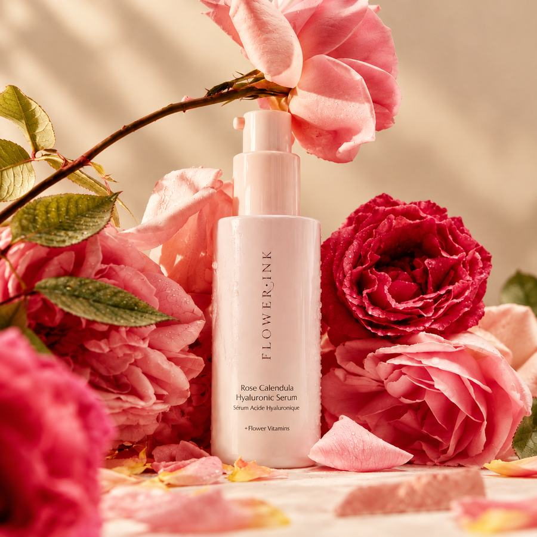
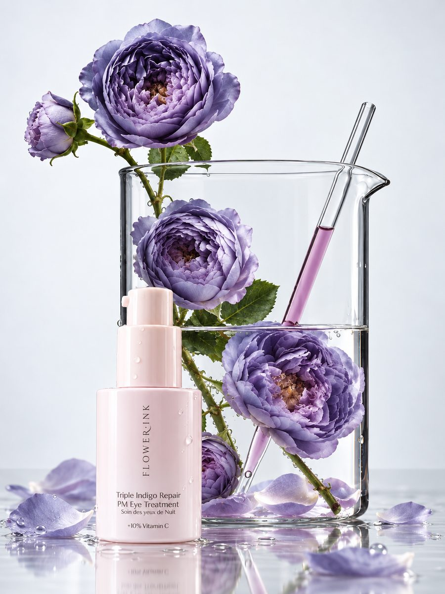

In the botanical library
Calendula

Find it in
Rose Calendula Hyaluronic Serum
Featured active in this formula Flower Vitamins
The flowers / Medicinal, functional, not decorative
Optimized by PhD scientists.
Botanical knowledge.
Scientific rigor. A little Flower Ink.
A botanical field guide
Choose a botanical.
Meet the formula where you will find it.
No botanicals found. Try another flower or formula.
Botanical names and formula links from the Flower Ink collection.
In the botanical library

Find it in
Featured active in this formula Flower Vitamins
Nature, with a purpose
The botanicals. The actives.
The science that brings them together.

Three parts of the Flower Ink approach.
Every formula is built on a structured system of medicinal flowers, each chosen for documented activity in skin: calming inflammation, defending against oxidative stress, supporting collagen and barrier repair. Used at levels where they can do their work, not sprinkled in for the label.
The flower system is amplified by advanced peptides, stabilized vitamin C, and plant-derived PDRN. Actives with demonstrated results, chosen to work alongside the botanicals rather than override them.
Dr. Chalker’s specialty is delivery: getting an active where it needs to go and keeping it stable until it arrives. Flower Ink’s delivery systems, patents pending, do this without the plastic polymers most of the industry relies on.
Considered, from the start
Color comes from flowers, botanicals, and minerals only.
No synthetic fragrance is ever added.
Flower-dyed colorNo synthetic dyes.
A considered formulaNo synthetic fragrance.
Under one roofMade in San Jose, California.
From our botanical library to your shelf
Nine skincare formulas.
A little Flower Ink, every day.